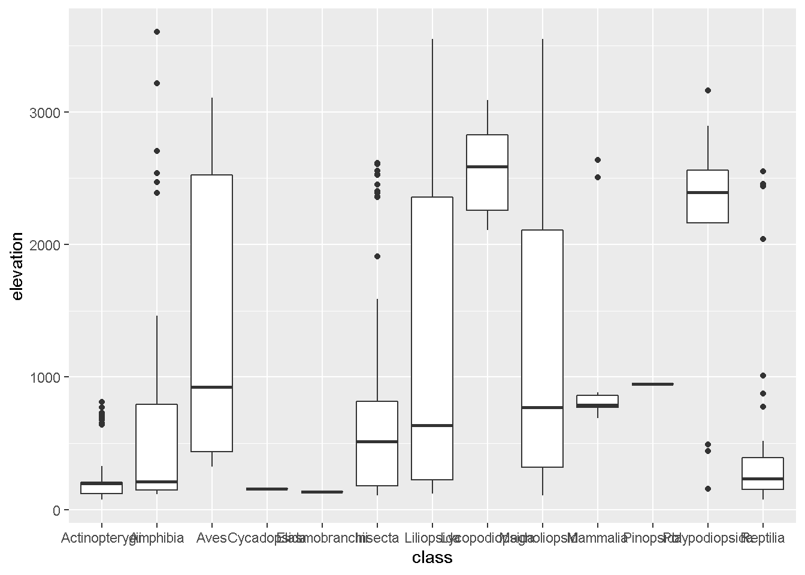

Chapter 6 Visualización de datos utilizando ggplot2
l paquete ggplot2 ofrece herramientas que ayudan a visualizar datos tidy en data frames
- Warning: package 'ggplot2' was built under R version 4.0.5
- Warning: package 'tidyverse' was built under R version 4.0.5
- -- Attaching packages --------------------------------------- tidyverse 1.3.1 --
- v tibble 3.1.4 v dplyr 1.0.7
- v tidyr 1.1.3 v stringr 1.4.0
- v readr 2.0.1 v forcats 0.5.1
- v purrr 0.3.4
- Warning: package 'tibble' was built under R version 4.0.5
- Warning: package 'tidyr' was built under R version 4.0.5
- Warning: package 'readr' was built under R version 4.0.5
- Warning: package 'dplyr' was built under R version 4.0.5
- Warning: package 'forcats' was built under R version 4.0.5
- -- Conflicts ------------------------------------------ tidyverse_conflicts() --
- x dplyr::filter() masks stats::filter()
- x dplyr::lag() masks stats::lag()- Rows: 1255 Columns: 10
- -- Column specification --------------------------------------------------------
- Delimiter: ","
- chr (9): species, locality, municipality, kingdom, phylum, class, order, fam...
- dbl (1): elevation
-
- i Use `spec()` to retrieve the full column specification for this data.
- i Specify the column types or set `show_col_types = FALSE` to quiet this message.El paquete ggplot2 ofrece herramientas que ayudan a visualizar datos tidy en data frames de forma organizada y sencilla, basado en la gramática de las gráficas. En la grámatica de las gráficas, la idea es que puedas construir gráficas a partir de los mismos componentes: un set de datos; un sistema de coordenadas (“X” y “Y”) y aspectos del gráfico; y formas o elementos geométricos que representan a los datos (puntos, lineas circulos, etc)
En ggplot, cada componente es un capa que se va añadiendo una tras otra usando el símbolo “+”
ggplot(data = dat) #La primera capa de un ggplot es el conjunto de datos que provienen de un data frame
ggplot(data = dat) +
aes(x = class) #Luego se añade el sistema de coordenas o relación entre las variables
ggplot(data = dat) +
aes(x = class) +
geom_bar() #Y añadimos un geom_ para representar geometricamente nuestros datos. Hay que tener precaución ya que no todos las representaciones gráficas funcionan bien para la relación entre las variables que establezcamos. Ggplot realiza algunas gráficas de manera predeterminada, si solo dejamos en aes() una unica variable, este graficará el número de observaciones por cada clase que exista en esa variable (geom_bar(stat="count")), ya que convierte las variables en factores para graficarlas
Estos son los 3 componentes principales para elaborar una gráfica en ggplot. Es posible seguir añadiendo capas para mejorar nuestra grafica y personalizarla de muchas maneras, sin embargo, si no se especifican, ggplot las establecerá por defecto
Al hacer parte del mundo de tidyverse, es posible encadenar la función de ggplot con las funciones vistas anteriormente y así crear un gráfico de forma directa. Vamos a crear una gráfico que nos muestre el número de especies únicas por municipio
dat %>%
group_by(municipality) %>%
summarise(unicos = unique(species)) %>%
ggplot(aes(x = municipality)) +
geom_bar()
- `summarise()` has grouped output by 'municipality'. You can override using the `.groups` argument.
Ggplot también establece colores y leyenda por defecto a partir de los factores en el elemento aes() con el argumento fill
dat %>%
group_by(municipality) %>%
summarise(unicos = unique(species)) %>%
ggplot(aes(x = municipality, fill = municipality)) +
geom_bar()
- `summarise()` has grouped output by 'municipality'. You can override using the `.groups` argument.
Podemos cambiar el orden de las barras cambiando el eje x a eje y. Si deseamos usar colores específicos para cada barra lo hacemos en el geom_:
dat %>%
group_by(municipality) %>%
summarise(unicos = unique(species)) %>%
ggplot(aes(y = municipality)) +
geom_bar(fill = c("blue", "yellow", "brown"), col = c("blue", "yellow", "brown")) # ¿Cuál es la diferencia entre fill y col?
- `summarise()` has grouped output by 'municipality'. You can override using the `.groups` argument.
Ejercicio: Realice una grafica con ggplot de los registros de mamiferos por cada localidad
dat %>%
filter(class == "Mammalia") %>%
ggplot(aes(x = locality)) +
geom_bar()
Ejercicio: Grafique los registros del orden coleoptera en las diferentes localidades de cada municipio. Para diferenciar a que municipio pertenece cada localidad, usel el argumento fill de aes()
dat %>%
filter(order == "Coleoptera") %>%
group_by(locality) %>%
ggplot(aes(x = locality, fill = municipality)) +
geom_bar()
Podemos agrupar las barras
dat %>%
filter(order == "Coleoptera") %>%
group_by(locality) %>%
ggplot(aes(x = municipality, fill = locality)) +
geom_bar(position = "stack")También podemos hacer graficos de cajas e histogramas cambiando de geom_
?geom_boxplot
dat %>%
ggplot(aes(x = municipality, y = elevation)) + #Grafico de cajas de la elevacion por cada municipio
geom_boxplot()
Ejercicio 1
- Realice un gráfico de cajas sobre la distribución de las alturas a la que fueron registradas las aves en cada localidad utilizando las funciones tidy
- ¿Cómo es la distribución de elevacion de las familias del orden Polypodiales?
- Realice un histograma de la elevación total y la elevación de ambos reinos
Experimente graficando la elevacion de diferentes grupos (reinos, clase, familia etc) utilizando las funcioens tidy
6.1 Theme
Igual que en la función básica de plot(), en ggplot podemos tener mas de una gráfica y personalizar cada elemento mediante theme()
as <- dat %>% mutate(elevation_2 = elevation+10)Ggplot cuenta con temas predeterminados que podemos cargar mediante theme_
?theme()
dat %>% mutate(aleatorios = runif(1255, min = 0, max = 3600)) %>%
ggplot(aes(x=elevation, y=aleatorios)) + #establecemos los datos y las variables "x" y "y"
theme_minimal() #tema del grafico para personalizar color de fondo, bordes, cuadrícula, etc.Dentro de theme() modificamos elementos como líneas, colores, ejes, entre otros
dat %>% mutate(aleatorios = runif(1255, min = 0, max = 3600)) %>%
ggplot(aes(x=elevation, y=aleatorios)) +
theme_minimal() + theme(panel.border = element_blank(),
panel.grid.major = element_blank(),
panel.grid.minor = element_blank(),
axis.line = element_line(colour = "white")) +#definimos fondo y bordes
labs(title = "Elevación vs números aleatorios", #título
subtitle = "Data: SantanderBIO") + #subtítulo
labs(x = "Elevación", y = "Némeros aleatorios")#nombres de los ejes
Añadimos un geom_ de puntos
dat %>% mutate(aleatorios = runif(1255, min = 0, max = 3600)) %>%
ggplot(aes(x=elevation, y=aleatorios)) + #Grafico base
geom_point() + # geometria que corresponde a los puntos
theme_bw() + theme(panel.border = element_blank(),
panel.grid.major = element_blank(),
panel.grid.minor = element_blank(),
axis.line = element_line(colour = "white")) +
labs(title = "Elevación vs números aleatorios",
subtitle = "Data: SantanderBIO") +
labs(x = "Elevación", y = "Némeros aleatorios")Coloreamos los puntos y modificamos el título de la leyenda generada
dat %>% mutate(aleatorios = runif(1255, min = 0, max = 3600)) %>%
ggplot(aes(x=elevation, y=aleatorios, color = municipality)) + #Gráfico base con color para cada punto
geom_point(shape=5) + # Geom que corresponde a los puntos y shape para modificar la forma del punto
theme_bw() + theme(panel.border = element_blank(),
panel.grid.major = element_blank(),
panel.grid.minor = element_blank(),
axis.line = element_line(colour = "white"))+#definimos fondo y bordes
scale_colour_discrete(name = "Municipios") + #Establecemos el título de la leyenda
labs(title = "Elevación vs números aleatorios",
subtitle = "Data: SantanderBIO") +
labs(x = "Elevación", y = "Números aleatorios")Podemos incluir en la gráfica algunos métodos estadísticos como la relación lineal entre los puntos
?geom_smooth
dat %>% mutate(aleatorios = runif(1255, min = 0, max = 3600)) %>%
ggplot(aes(x=elevation, y=aleatorios)) +
geom_point(shape=5) +
geom_smooth(method = "lm", se = TRUE) + #método lm e intervalo de confianza
theme_bw() + theme(panel.border = element_blank(),
panel.grid.major = element_blank(),
panel.grid.minor = element_blank(),
axis.line = element_line(colour = "white")) +
scale_colour_discrete(name = "Municipios") +
labs(title = "Elevación vs números aleatorios",
subtitle = "Data: SantanderBIO") +
labs(x = "Elevación", y = "Números aleatorios")
- `geom_smooth()` using formula 'y ~ x'
Y por cada grupo
dat %>% mutate(aleatorios = runif(1255, min = 0, max = 3600)) %>%
ggplot(aes(x=elevation, y=aleatorios, color = municipality)) +
geom_point(shape=5) +
geom_smooth(method = "lm", se = TRUE) +
theme_bw() + theme(panel.border = element_blank(),
panel.grid.major = element_blank(),
panel.grid.minor = element_blank(),
axis.line = element_line(colour = "white")) +
scale_colour_discrete(name = "Municipios") +
labs(title = "Elevación vs números aleatorios",
subtitle = "Data: SantanderBIO") +
labs(x = "Elevación", y = "Números aleatorios")
- `geom_smooth()` using formula 'y ~ x'
Para poder mostrar mas de una gráfica en el mismo plot se utiliza face_wrap. Revise la función y realice el histograma anterior pero ubique en un mismo plot 3 gráficas para cada municipio
?facet_wrap
ggplot(data = dat) +
geom_histogram(aes(x = elevation, fill = municipality), bins = 12) +
facet_wrap(~municipality, ncol = 1)+ #para cada especie, realice tres histogramas en una columna
theme_bw() + theme(panel.border = element_blank(),
panel.grid.major = element_blank(),
panel.grid.minor = element_blank(),
axis.line = element_line(colour = "white")) +
labs(title = "Elevación por municipio",
subtitle = "Data: SantanderBIO") +
labs(x = "Elevación", y = "Conteo")
Todas las características de un tema pueden ser guardadas en un vector para evitar escribir el tema cada vez que se grafique
mitema <- theme(panel.grid.major = element_line(colour = "green"),
panel.grid.minor = element_line(colour = "pink"),
panel.background = element_rect(fill = "blue"),
panel.border = element_blank(),axis.line = element_line(size = 0.9, linetype = "solid", colour = "black"))
ggplot(data = dat, aes(x = elevation, y = elevation))+
mitema
Ejercicio 2
1.Contruir un tema personalizado 2. Crear una gráfica de barras de el número de individuos por cada clase, utilizando un color diferente para cada barra y el tema creado anteriomente. 3.Realizar el gráfico anterior pero generando una gráfica separada para cada clase en el mismo plot 4. Conviertir la gráfica de barras del punto 2 en una gráfica de torta mediante coord_polar()
Finalmente, con el sistema de coordenadas “x” y “y” es posible hacer increíbles mapas mediante ggplot
nz <- map_data("nz") #Cargamos un set de datos que contienede coordenadas longitud y latitud, y columnas que indican a que región corresponden esas coordenadas
ggplot(nz, aes(long, lat, group = group)) +
geom_polygon(fill = "white", colour = "black")
6.2 Forcats
El paquete forcats tiene como objetivo brindar herramientas de ayuda para manejar variables categóricas.
Convirtamos una variable en un factor
dat$class <- as.factor(dat$class)
levels(dat$class) #Revisamos las categorías
- [1] "Actinopterygii" "Amphibia" "Aves" "Cycadopsida"
- [5] "Elasmobranchii" "Insecta" "Liliopsida" "Lycopodiopsida"
- [9] "Magnoliopsida" "Mammalia" "Pinopsida" "Polypodiopsida"
- [13] "Reptilia"
dat %>%
ggplot(aes(x = class)) +
geom_bar() +
coord_flip()
Vemos que se grafica un conteo de la variable “class” por cada factor, ahora vamos a ordenar esta gráfica con forcats
dat %>%
mutate(class = fct_infreq(class)) %>%
ggplot(aes(x = class)) +
geom_bar() +
coord_flip()#Ahora tenemos los cada categoria ordenada por su frecuenciaPodemos ordenar un factor por otra variable
dat %>%
ggplot(aes(x = class, y = elevation)) +
geom_boxplot() 
#Bloxplot de la distribución del a altura por cada clase
dat %>%
mutate(class = fct_reorder(class, elevation)) %>%
ggplot(aes(x = class, y = elevation)) +
geom_boxplot()
#En este caso ordenamos las clases por la mediana de sus elevacionesSi tenemos clases con pocas o muchas observaciones podemos agruparlos en un nuevo grupo llamado “other.” Explique la diferencia entre las dos gráficas
dat %>%
mutate(class = fct_lump(class, n = 5)) %>%
ggplot(aes(x = class)) +
geom_bar() +
coord_flip()dat %>%
mutate(class = fct_lump(class, n = -5)) %>%
ggplot(aes(x = class)) +
geom_bar() +
coord_flip()forcats tambien nos permite ordenar las categorias a mano
f <- as.factor(dat$phylum)
levels(f)
- [1] "Arthropoda" "Chordata" "Tracheophyta"
fct_relevel(f, "Tracheophyta", "Arthropoda", "Chordata")
- [1] Tracheophyta Tracheophyta Tracheophyta Tracheophyta Tracheophyta
- [6] Tracheophyta Tracheophyta Chordata Tracheophyta Chordata
- [11] Tracheophyta Tracheophyta Chordata Chordata Tracheophyta
- [16] Chordata Chordata Tracheophyta Chordata Chordata
- [21] Chordata Chordata Chordata Tracheophyta Arthropoda
- [26] Arthropoda Arthropoda Arthropoda Arthropoda Arthropoda
- [31] Tracheophyta Tracheophyta Tracheophyta Tracheophyta Tracheophyta
- [36] Tracheophyta Tracheophyta Tracheophyta Tracheophyta Arthropoda
- [41] Tracheophyta Tracheophyta Tracheophyta Chordata Chordata
- [46] Tracheophyta Tracheophyta Tracheophyta Chordata Arthropoda
- [51] Arthropoda Arthropoda Chordata Tracheophyta Chordata
- [56] Tracheophyta Arthropoda Tracheophyta Tracheophyta Tracheophyta
- [61] Chordata Tracheophyta Chordata Tracheophyta Arthropoda
- [66] Arthropoda Arthropoda Tracheophyta Tracheophyta Tracheophyta
- [71] Tracheophyta Tracheophyta Tracheophyta Chordata Tracheophyta
- [76] Chordata Chordata Tracheophyta Tracheophyta Tracheophyta
- [81] Tracheophyta Tracheophyta Tracheophyta Tracheophyta Tracheophyta
- [86] Tracheophyta Tracheophyta Tracheophyta Tracheophyta Tracheophyta
- [91] Chordata Chordata Tracheophyta Tracheophyta Chordata
- [96] Chordata Chordata Chordata Tracheophyta Tracheophyta
- [101] Tracheophyta Tracheophyta Tracheophyta Tracheophyta Tracheophyta
- [106] Tracheophyta Tracheophyta Chordata Chordata Chordata
- [111] Chordata Chordata Tracheophyta Chordata Chordata
- [116] Tracheophyta Tracheophyta Tracheophyta Tracheophyta Tracheophyta
- [121] Tracheophyta Tracheophyta Tracheophyta Tracheophyta Tracheophyta
- [126] Tracheophyta Tracheophyta Tracheophyta Tracheophyta Tracheophyta
- [131] Tracheophyta Arthropoda Arthropoda Arthropoda Arthropoda
- [136] Arthropoda Arthropoda Tracheophyta Tracheophyta Tracheophyta
- [141] Tracheophyta Tracheophyta Tracheophyta Tracheophyta Tracheophyta
- [146] Tracheophyta Tracheophyta Tracheophyta Tracheophyta Tracheophyta
- [151] Arthropoda Tracheophyta Chordata Tracheophyta Tracheophyta
- [156] Tracheophyta Chordata Chordata Tracheophyta Chordata
- [161] Tracheophyta Tracheophyta Tracheophyta Tracheophyta Tracheophyta
- [166] Tracheophyta Chordata Chordata Chordata Chordata
- [171] Chordata Tracheophyta Tracheophyta Tracheophyta Chordata
- [176] Chordata Tracheophyta Tracheophyta Tracheophyta Chordata
- [181] Chordata Chordata Chordata Tracheophyta Tracheophyta
- [186] Tracheophyta Tracheophyta Chordata Tracheophyta Tracheophyta
- [191] Tracheophyta Chordata Chordata Tracheophyta Arthropoda
- [196] Chordata Tracheophyta Tracheophyta Tracheophyta Tracheophyta
- [201] Tracheophyta Tracheophyta Tracheophyta Tracheophyta Tracheophyta
- [206] Tracheophyta Tracheophyta Tracheophyta Tracheophyta Tracheophyta
- [211] Tracheophyta Tracheophyta Tracheophyta Tracheophyta Tracheophyta
- [216] Tracheophyta Tracheophyta Tracheophyta Tracheophyta Tracheophyta
- [221] Tracheophyta Chordata Chordata Chordata Chordata
- [226] Tracheophyta Chordata Chordata Tracheophyta Tracheophyta
- [231] Chordata Chordata Chordata Chordata Chordata
- [236] Tracheophyta Chordata Tracheophyta Tracheophyta Chordata
- [241] Chordata Chordata Tracheophyta Arthropoda Chordata
- [246] Tracheophyta Tracheophyta Tracheophyta Chordata Chordata
- [251] Tracheophyta Tracheophyta Tracheophyta Tracheophyta Chordata
- [256] Tracheophyta Chordata Arthropoda Tracheophyta Tracheophyta
- [261] Chordata Chordata Chordata Chordata Chordata
- [266] Chordata Chordata Chordata Chordata Tracheophyta
- [271] Chordata Tracheophyta Arthropoda Chordata Tracheophyta
- [276] Tracheophyta Chordata Chordata Chordata Tracheophyta
- [281] Arthropoda Arthropoda Arthropoda Tracheophyta Chordata
- [286] Tracheophyta Chordata Chordata Chordata Chordata
- [291] Chordata Tracheophyta Tracheophyta Chordata Tracheophyta
- [296] Tracheophyta Chordata Chordata Tracheophyta Tracheophyta
- [301] Tracheophyta Chordata Chordata Chordata Chordata
- [306] Chordata Chordata Tracheophyta Tracheophyta Tracheophyta
- [311] Tracheophyta Chordata Chordata Chordata Chordata
- [316] Chordata Chordata Chordata Tracheophyta Tracheophyta
- [321] Chordata Tracheophyta Tracheophyta Tracheophyta Tracheophyta
- [326] Tracheophyta Tracheophyta Tracheophyta Tracheophyta Chordata
- [331] Tracheophyta Chordata Tracheophyta Chordata Chordata
- [336] Tracheophyta Chordata Arthropoda Arthropoda Tracheophyta
- [341] Arthropoda Tracheophyta Tracheophyta Tracheophyta Chordata
- [346] Chordata Chordata Arthropoda Chordata Chordata
- [351] Tracheophyta Tracheophyta Tracheophyta Tracheophyta Chordata
- [356] Tracheophyta Chordata Chordata Tracheophyta Chordata
- [361] Chordata Chordata Tracheophyta Chordata Chordata
- [366] Chordata Chordata Chordata Chordata Tracheophyta
- [371] Tracheophyta Chordata Tracheophyta Tracheophyta Chordata
- [376] Tracheophyta Chordata Chordata Chordata Tracheophyta
- [381] Arthropoda Tracheophyta Arthropoda Chordata Tracheophyta
- [386] Tracheophyta Tracheophyta Tracheophyta Chordata Chordata
- [391] Tracheophyta Tracheophyta Arthropoda Chordata Tracheophyta
- [396] Chordata Tracheophyta Tracheophyta Chordata Tracheophyta
- [401] Tracheophyta Tracheophyta Tracheophyta Tracheophyta Tracheophyta
- [406] Tracheophyta Arthropoda Tracheophyta Tracheophyta Tracheophyta
- [411] Tracheophyta Chordata Chordata Chordata Tracheophyta
- [416] Chordata Tracheophyta Tracheophyta Tracheophyta Chordata
- [421] Arthropoda Chordata Chordata Chordata Chordata
- [426] Tracheophyta Chordata Tracheophyta Tracheophyta Tracheophyta
- [431] Tracheophyta Tracheophyta Arthropoda Tracheophyta Tracheophyta
- [436] Tracheophyta Tracheophyta Arthropoda Arthropoda Chordata
- [441] Arthropoda Chordata Chordata Tracheophyta Tracheophyta
- [446] Chordata Tracheophyta Tracheophyta Chordata Chordata
- [451] Tracheophyta Chordata Tracheophyta Chordata Arthropoda
- [456] Chordata Tracheophyta Tracheophyta Tracheophyta Tracheophyta
- [461] Tracheophyta Tracheophyta Tracheophyta Tracheophyta Tracheophyta
- [466] Arthropoda Chordata Tracheophyta Tracheophyta Chordata
- [471] Chordata Chordata Tracheophyta Tracheophyta Tracheophyta
- [476] Chordata Tracheophyta Chordata Tracheophyta Tracheophyta
- [481] Arthropoda Arthropoda Arthropoda Arthropoda Arthropoda
- [486] Arthropoda Arthropoda Tracheophyta Chordata Arthropoda
- [491] Chordata Chordata Chordata Tracheophyta Chordata
- [496] Tracheophyta Tracheophyta Tracheophyta Tracheophyta Tracheophyta
- [501] Tracheophyta Arthropoda Chordata Chordata Tracheophyta
- [506] Tracheophyta Chordata Tracheophyta Chordata Arthropoda
- [511] Chordata Arthropoda Tracheophyta Chordata Tracheophyta
- [516] Chordata Chordata Tracheophyta Tracheophyta Tracheophyta
- [521] Chordata Chordata Chordata Tracheophyta Tracheophyta
- [526] Tracheophyta Tracheophyta Tracheophyta Tracheophyta Tracheophyta
- [531] Arthropoda Chordata Tracheophyta Tracheophyta Tracheophyta
- [536] Tracheophyta Chordata Chordata Chordata Tracheophyta
- [541] Tracheophyta Chordata Arthropoda Chordata Tracheophyta
- [546] Tracheophyta Tracheophyta Tracheophyta Tracheophyta Tracheophyta
- [551] Tracheophyta Chordata Tracheophyta Arthropoda Arthropoda
- [556] Chordata Tracheophyta Chordata Chordata Chordata
- [561] Chordata Chordata Tracheophyta Chordata Tracheophyta
- [566] Chordata Tracheophyta Tracheophyta Tracheophyta Chordata
- [571] Tracheophyta Tracheophyta Tracheophyta Tracheophyta Tracheophyta
- [576] Tracheophyta Tracheophyta Tracheophyta Tracheophyta Tracheophyta
- [581] Tracheophyta Tracheophyta Tracheophyta Tracheophyta Tracheophyta
- [586] Tracheophyta Tracheophyta Tracheophyta Tracheophyta Tracheophyta
- [591] Tracheophyta Tracheophyta Tracheophyta Tracheophyta Tracheophyta
- [596] Tracheophyta Tracheophyta Tracheophyta Tracheophyta Tracheophyta
- [601] Tracheophyta Tracheophyta Chordata Chordata Chordata
- [606] Tracheophyta Tracheophyta Chordata Chordata Tracheophyta
- [611] Tracheophyta Tracheophyta Tracheophyta Tracheophyta Tracheophyta
- [616] Tracheophyta Chordata Tracheophyta Tracheophyta Tracheophyta
- [621] Tracheophyta Arthropoda Chordata Tracheophyta Tracheophyta
- [626] Tracheophyta Tracheophyta Chordata Arthropoda Arthropoda
- [631] Tracheophyta Tracheophyta Arthropoda Tracheophyta Chordata
- [636] Chordata Chordata Chordata Arthropoda Arthropoda
- [641] Chordata Tracheophyta Chordata Chordata Tracheophyta
- [646] Tracheophyta Tracheophyta Chordata Tracheophyta Chordata
- [651] Tracheophyta Chordata Arthropoda Tracheophyta Chordata
- [656] Tracheophyta Tracheophyta Chordata Chordata Tracheophyta
- [661] Tracheophyta Tracheophyta Tracheophyta Tracheophyta Tracheophyta
- [666] Tracheophyta Tracheophyta Tracheophyta Chordata Chordata
- [671] Tracheophyta Tracheophyta Tracheophyta Tracheophyta Tracheophyta
- [676] Tracheophyta Tracheophyta Tracheophyta Tracheophyta Tracheophyta
- [681] Tracheophyta Tracheophyta Tracheophyta Tracheophyta Chordata
- [686] Tracheophyta Tracheophyta Arthropoda Tracheophyta Tracheophyta
- [691] Tracheophyta Chordata Chordata Tracheophyta Tracheophyta
- [696] Chordata Chordata Chordata Tracheophyta Tracheophyta
- [701] Tracheophyta Tracheophyta Chordata Chordata Chordata
- [706] Arthropoda Chordata Chordata Tracheophyta Tracheophyta
- [711] Chordata Tracheophyta Tracheophyta Tracheophyta Chordata
- [716] Tracheophyta Tracheophyta Tracheophyta Tracheophyta Tracheophyta
- [721] Tracheophyta Tracheophyta Tracheophyta Tracheophyta Tracheophyta
- [726] Tracheophyta Tracheophyta Tracheophyta Tracheophyta Tracheophyta
- [731] Tracheophyta Arthropoda Tracheophyta Tracheophyta Tracheophyta
- [736] Tracheophyta Tracheophyta Tracheophyta Tracheophyta Tracheophyta
- [741] Tracheophyta Tracheophyta Tracheophyta Tracheophyta Tracheophyta
- [746] Tracheophyta Tracheophyta Tracheophyta Tracheophyta Tracheophyta
- [751] Tracheophyta Tracheophyta Tracheophyta Tracheophyta Tracheophyta
- [756] Tracheophyta Tracheophyta Tracheophyta Tracheophyta Tracheophyta
- [761] Arthropoda Tracheophyta Tracheophyta Tracheophyta Tracheophyta
- [766] Tracheophyta Tracheophyta Tracheophyta Tracheophyta Tracheophyta
- [771] Tracheophyta Arthropoda Arthropoda Tracheophyta Tracheophyta
- [776] Tracheophyta Tracheophyta Tracheophyta Tracheophyta Tracheophyta
- [781] Tracheophyta Tracheophyta Tracheophyta Tracheophyta Tracheophyta
- [786] Chordata Chordata Tracheophyta Tracheophyta Tracheophyta
- [791] Tracheophyta Tracheophyta Tracheophyta Tracheophyta Tracheophyta
- [796] Tracheophyta Tracheophyta Tracheophyta Tracheophyta Tracheophyta
- [801] Tracheophyta Tracheophyta Tracheophyta Tracheophyta Tracheophyta
- [806] Tracheophyta Tracheophyta Tracheophyta Tracheophyta Tracheophyta
- [811] Tracheophyta Tracheophyta Tracheophyta Tracheophyta Tracheophyta
- [816] Tracheophyta Tracheophyta Tracheophyta Tracheophyta Tracheophyta
- [821] Tracheophyta Tracheophyta Tracheophyta Tracheophyta Tracheophyta
- [826] Tracheophyta Tracheophyta Chordata Tracheophyta Tracheophyta
- [831] Tracheophyta Tracheophyta Tracheophyta Tracheophyta Tracheophyta
- [836] Tracheophyta Tracheophyta Tracheophyta Tracheophyta Tracheophyta
- [841] Tracheophyta Tracheophyta Tracheophyta Tracheophyta Tracheophyta
- [846] Tracheophyta Tracheophyta Tracheophyta Tracheophyta Tracheophyta
- [851] Tracheophyta Tracheophyta Tracheophyta Tracheophyta Tracheophyta
- [856] Chordata Tracheophyta Tracheophyta Tracheophyta Tracheophyta
- [861] Chordata Tracheophyta Tracheophyta Tracheophyta Tracheophyta
- [866] Tracheophyta Tracheophyta Tracheophyta Tracheophyta Tracheophyta
- [871] Tracheophyta Tracheophyta Tracheophyta Tracheophyta Tracheophyta
- [876] Tracheophyta Tracheophyta Tracheophyta Tracheophyta Tracheophyta
- [881] Tracheophyta Tracheophyta Tracheophyta Tracheophyta Tracheophyta
- [886] Tracheophyta Chordata Tracheophyta Tracheophyta Tracheophyta
- [891] Tracheophyta Tracheophyta Tracheophyta Tracheophyta Tracheophyta
- [896] Tracheophyta Tracheophyta Tracheophyta Tracheophyta Tracheophyta
- [901] Tracheophyta Tracheophyta Tracheophyta Tracheophyta Tracheophyta
- [906] Tracheophyta Tracheophyta Tracheophyta Tracheophyta Tracheophyta
- [911] Tracheophyta Tracheophyta Tracheophyta Tracheophyta Tracheophyta
- [916] Tracheophyta Tracheophyta Tracheophyta Tracheophyta Tracheophyta
- [921] Tracheophyta Tracheophyta Tracheophyta Tracheophyta Tracheophyta
- [926] Tracheophyta Tracheophyta Tracheophyta Tracheophyta Tracheophyta
- [931] Tracheophyta Tracheophyta Tracheophyta Tracheophyta Tracheophyta
- [936] Tracheophyta Tracheophyta Tracheophyta Tracheophyta Tracheophyta
- [941] Tracheophyta Tracheophyta Tracheophyta Tracheophyta Tracheophyta
- [946] Tracheophyta Tracheophyta Tracheophyta Tracheophyta Tracheophyta
- [951] Tracheophyta Tracheophyta Tracheophyta Tracheophyta Tracheophyta
- [956] Tracheophyta Tracheophyta Tracheophyta Tracheophyta Tracheophyta
- [961] Tracheophyta Tracheophyta Tracheophyta Tracheophyta Tracheophyta
- [966] Tracheophyta Tracheophyta Tracheophyta Tracheophyta Tracheophyta
- [971] Tracheophyta Tracheophyta Tracheophyta Tracheophyta Tracheophyta
- [976] Tracheophyta Chordata Chordata Chordata Chordata
- [981] Tracheophyta Tracheophyta Tracheophyta Tracheophyta Tracheophyta
- [986] Tracheophyta Tracheophyta Tracheophyta Tracheophyta Tracheophyta
- [991] Tracheophyta Tracheophyta Tracheophyta Tracheophyta Tracheophyta
- [996] Tracheophyta Tracheophyta Tracheophyta Tracheophyta Tracheophyta
- [1001] Tracheophyta Tracheophyta Tracheophyta Tracheophyta Tracheophyta
- [1006] Tracheophyta Tracheophyta Tracheophyta Tracheophyta Tracheophyta
- [1011] Tracheophyta Tracheophyta Tracheophyta Tracheophyta Tracheophyta
- [1016] Tracheophyta Tracheophyta Tracheophyta Tracheophyta Tracheophyta
- [1021] Tracheophyta Chordata Tracheophyta Tracheophyta Tracheophyta
- [1026] Tracheophyta Tracheophyta Tracheophyta Tracheophyta Tracheophyta
- [1031] Tracheophyta Tracheophyta Tracheophyta Tracheophyta Tracheophyta
- [1036] Tracheophyta Tracheophyta Tracheophyta Tracheophyta Tracheophyta
- [1041] Tracheophyta Chordata Tracheophyta Tracheophyta Tracheophyta
- [1046] Tracheophyta Chordata Chordata Tracheophyta Tracheophyta
- [1051] Tracheophyta Tracheophyta Tracheophyta Chordata Tracheophyta
- [1056] Tracheophyta Tracheophyta Chordata Tracheophyta Tracheophyta
- [1061] Tracheophyta Tracheophyta Tracheophyta Tracheophyta Chordata
- [1066] Chordata Tracheophyta Tracheophyta Tracheophyta Chordata
- [1071] Tracheophyta Tracheophyta Chordata Chordata Tracheophyta
- [1076] Tracheophyta Tracheophyta Tracheophyta Tracheophyta Chordata
- [1081] Chordata Chordata Tracheophyta Tracheophyta Tracheophyta
- [1086] Tracheophyta Tracheophyta Tracheophyta Tracheophyta Tracheophyta
- [1091] Tracheophyta Tracheophyta Tracheophyta Tracheophyta Chordata
- [1096] Chordata Tracheophyta Chordata Tracheophyta Tracheophyta
- [1101] Tracheophyta Chordata Chordata Chordata Tracheophyta
- [1106] Tracheophyta Tracheophyta Tracheophyta Chordata Tracheophyta
- [1111] Tracheophyta Tracheophyta Tracheophyta Tracheophyta Tracheophyta
- [1116] Tracheophyta Tracheophyta Tracheophyta Chordata Tracheophyta
- [1121] Tracheophyta Tracheophyta Tracheophyta Tracheophyta Tracheophyta
- [1126] Chordata Tracheophyta Chordata Chordata Chordata
- [1131] Arthropoda Arthropoda Arthropoda Arthropoda Chordata
- [1136] Tracheophyta Tracheophyta Tracheophyta Tracheophyta Arthropoda
- [1141] Chordata Chordata Chordata Chordata Arthropoda
- [1146] Chordata Chordata Arthropoda Arthropoda Arthropoda
- [1151] Arthropoda Arthropoda Arthropoda Tracheophyta Chordata
- [1156] Tracheophyta Chordata Chordata Tracheophyta Chordata
- [1161] Chordata Chordata Chordata Tracheophyta Chordata
- [1166] Tracheophyta Chordata Arthropoda Arthropoda Arthropoda
- [1171] Arthropoda Arthropoda Chordata Chordata Chordata
- [1176] Chordata Tracheophyta Chordata Chordata Chordata
- [1181] Tracheophyta Chordata Chordata Chordata Chordata
- [1186] Arthropoda Chordata Chordata Chordata Chordata
- [1191] Chordata Arthropoda Arthropoda Chordata Chordata
- [1196] Chordata Chordata Chordata Chordata Arthropoda
- [1201] Chordata Chordata Chordata Chordata Chordata
- [1206] Chordata Arthropoda Arthropoda Chordata Chordata
- [1211] Chordata Arthropoda Arthropoda Chordata Chordata
- [1216] Chordata Chordata Chordata Chordata Chordata
- [1221] Chordata Arthropoda Chordata Chordata Chordata
- [1226] Chordata Chordata Chordata Chordata Chordata
- [1231] Chordata Chordata Arthropoda Chordata Chordata
- [1236] Chordata Chordata Chordata Arthropoda Arthropoda
- [1241] Chordata Chordata Chordata Chordata Chordata
- [1246] Chordata Chordata Chordata Chordata Chordata
- [1251] Chordata Arthropoda Arthropoda Chordata Chordata
- Levels: Tracheophyta Arthropoda Chordata